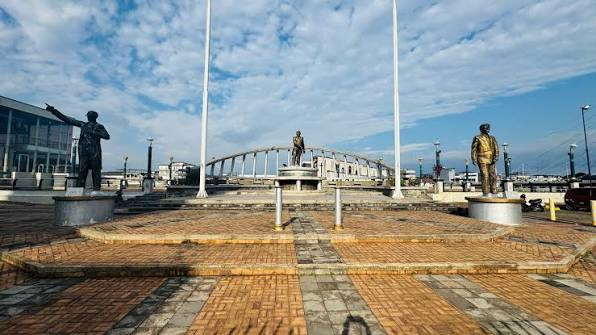
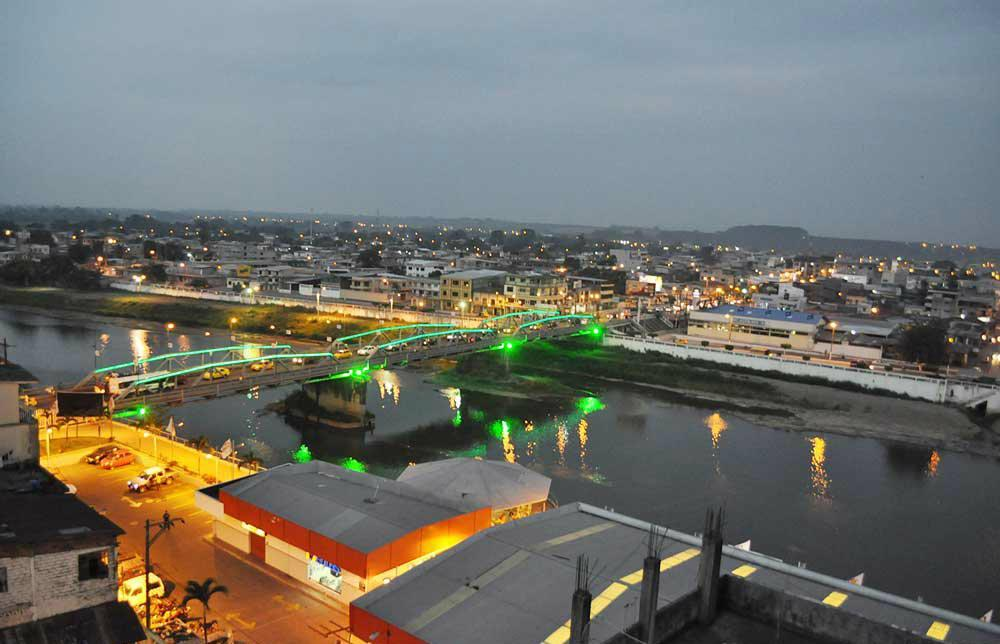
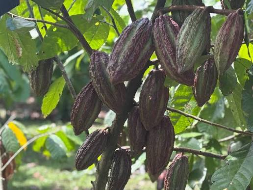

Paseo FluvialMalecón del Río Quevedo
Espacio recreativo y cívico frente al río, con amplias camineras peatonales, miradores y ambiente familiar.
Conocer más →Descubre los encantos de la capital económica de Los Ríos: paseos en lancha por el río Quevedo, arquitectura histórica, parques tradicionales y el mejor agroturismo cacaotero del Ecuador.
Conoce los puntos más representativos de la ciudad y planifica tu próxima visita.

Paseo FluvialEspacio recreativo y cívico frente al río, con amplias camineras peatonales, miradores y ambiente familiar.
Conocer más →
Monumento HistóricoEstructura metálica insignia que une las dos orillas de la urbe, ideal para recorridos fotográficos.
Conocer más →
AgroturismoExperiencia sensorial donde aprenderás el cultivo, fermentación y molienda artesanal del cacao fino de aroma.
Conocer más →